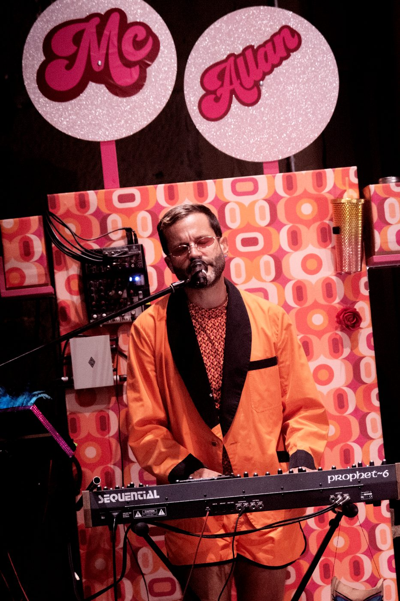
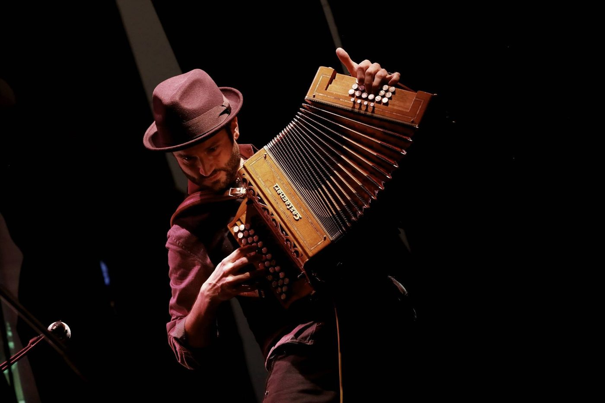
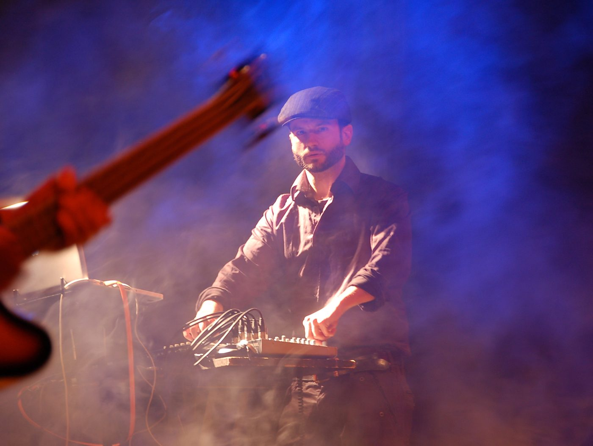

I have been working in theatre since 2008: first as a sound engineer on Italian productions and tours, then as a composer and live musician. I write the music, I play it on stage, and I know what the sound has to do in a theatre, from the rehearsal room to the last night of the tour.Lavoro in teatro dal 2008: prima come fonico in produzioni e tournée italiane, poi come compositore e musicista dal vivo. Scrivo la musica, la suono in scena, e so cosa deve fare il suono in un teatro, dalla sala prove all'ultima replica.

I work in the rehearsal room with directors, actors and dancers. The music grows with the scenes, not on its own: I try things live and keep what works.Lavoro in sala prove con registi, attori e danzatori. La musica cresce con le scene, non per conto suo: provo dal vivo e tengo quello che funziona.
Diatonic accordion, percussion, synthesizers, voice, loop station, objects on stage: the sound can come from anything, as long as it belongs to the show.Organetto, percussioni, sintetizzatori, voce, loop station, oggetti in scena: il suono può venire da qualunque cosa, purché appartenga allo spettacolo.
I often play the music live during the show, with an Ableton set built so that it holds up every night, and I can be part of the scene when the show needs it.Spesso suono la musica dal vivo durante lo spettacolo, con un set Ableton costruito per reggere ogni sera, e posso stare dentro la scena quando lo spettacolo lo chiede.
Trained as a sound engineer, I deliver music that is ready for the venue: cues, playback, levels and a setup the technicians can run.Ho studiato da fonico: consegno musica pronta per il teatro, con cue, playback, livelli e un impianto che i tecnici possono gestire.
Cirque de Loin · composer and live musician since 2019: Smash, L'homme n'existe pas, Soror.compositore e musicista dal vivo dal 2019: Smash, L'homme n'existe pas, Soror.
Trailers, photos and credits →Trailer, foto e crediti →

Two pieces from Soror (Cirque de Loin, 2019), to give an idea of the sound.Due brani da Soror (Cirque de Loin, 2019), per dare un'idea del suono.